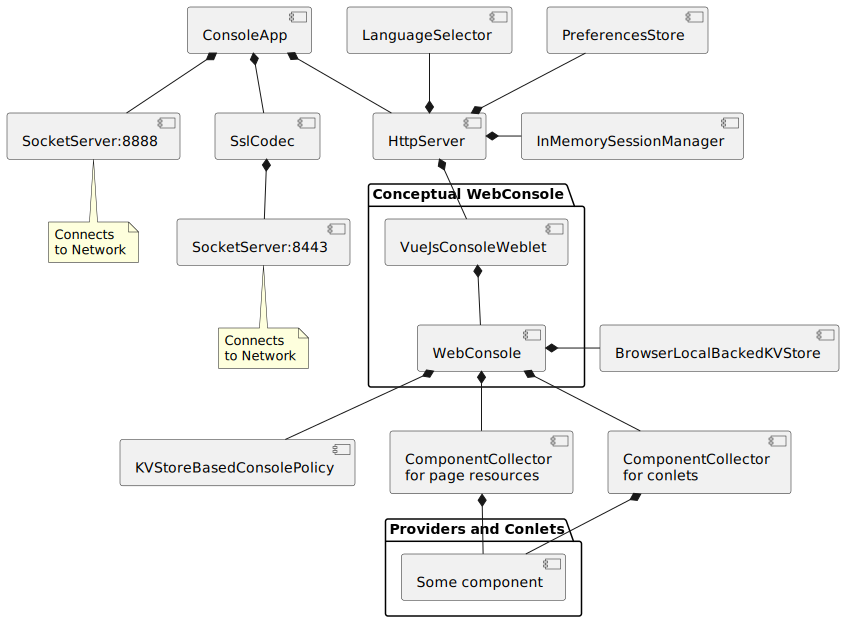
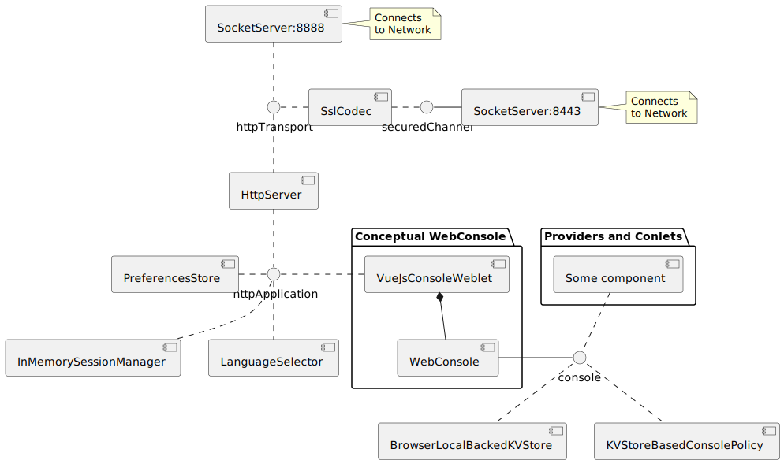

Package org.jgrapes.webconsole.examples.consoleapp
It provides a web console with HTTP (port 8888) and HTTPS (port 8443) access.
Component tree
An instance of the
ConsoleApp serves
as root of the component tree.

The child components of the ConsoleApp instance are the components
related to the network connection, a SocketServer
for the plain text connection and an SslCodec
with another SocketServer as its child for the encrypted connection.
In addition there is an HttpServer that
handles the I/O events and converts them to HTTP level events.
The HttpServer has as children all components that handle HTTP
requests (and generate the responses). Most notably the
VueJsConsoleWeblet that
handles the resource requests related to the main page and generates
the provider and conlet related events.
Attached to the WebConsole, we
finally have the components
BrowserLocalBackedKVStore
and KVStoreBasedConsolePolicy
and the ComponentCollectors for page
resource providers and conlets. The collectors pick up the
page providers and web conlets in the classpath and attach
them to themselves.
Channel usage
In order to avoid unnecessary handler invocations, the components use different channels for different event domains, as shown in the next picture.

The only component interested in events from
the SocketServer for the secure connection
is the SslCodec (end the events that the latter
generates are only intended for the former). Therefore these two use
a channel of their own (the SocketServer instance for simplicity).
Input from the socket server for plain connections and input from
the SSlCodec is handled solemnly by the HttpServer.
So these three use their own channel. Again, this also applies to the
reverse direction, i.e. output events generated by the HttpServer are
handled by the SocketServer or the SslCodec that has created the
subchannel on which the event (as a response) is fired.
HTTP application layer events that are generated by the HttpServer are fired on the httpApplication channel which is used by the components interested in theses events.
Finally, we use the WebConsole
component as channel for all events related to the portal application.
-
Classes